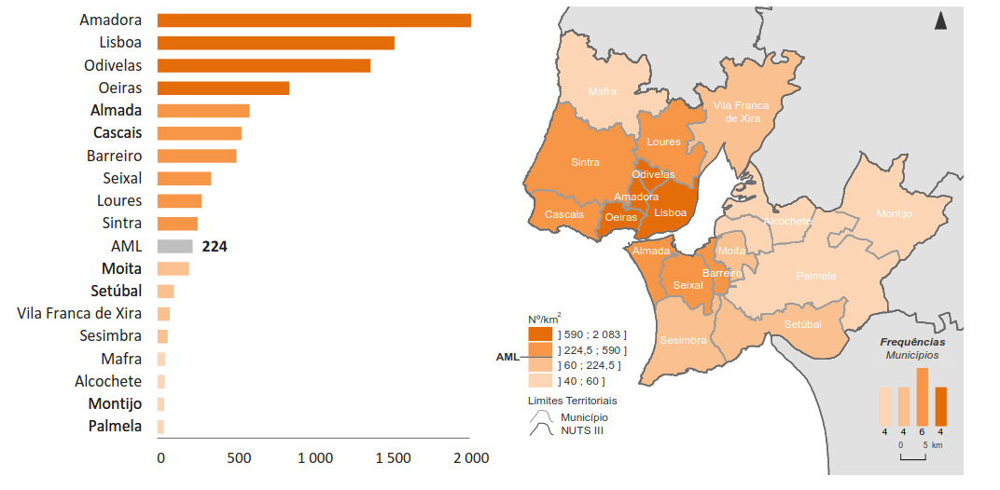

Dawn transit network analysis
🌆🌃🌇
By Gonçalo Matos, for Lisboa Para Pessoas
💡 Motivation
Night-time public transport is common in European cities (Plyushteva and Boussauw 2020)
It can have positive impacts on road safety (Lichtman-Sadot 2019) and contribute to local economy (Transport for London 2015)
Lisbon has them, but with low frequency and poor connections to the outskirts, despite 81% of the Metro Area inhabitants living outside the city (INE 2021)
Mobility dynamic at night is not limited to Lisbon (INE 2018)

💡 Motivation
Problem acknowledged by experts, that state a “mismatch with people’s needs and economic activities” (TML and W2G 2024)
Carris Metropolitana night network launch has been a success, with increases in demand up to 117% (Carris Metropolitana 2025)

🌃 What transport options exist at dawn and where do they reach? 🌇
Operators’ GTFS collection
| Mode | Area | Operator | URL |
|---|---|---|---|
| 🚆 | Metro Area | CP | 📂 |
| 🚆 | Metro Area | Fertagus | 📂 |
| 🚍 | Metro Area | Carris Metropolitana | 📂 |
| ️⛴️ | Metro Area | TTSL | 📂 |
| 🚇 | Lisbon, Odivelas, Amadora | Metro | 📂 |
| 🚊 | Almada, Seixal | MTS | 📂 |
| 🚍 | Lisbon | Carris | 📂 |
| 🚍 | Cascais | MobiCascais | 📂 |
| 🚍 | Barreiro | TCB | 📂 |
🤿 Let’s dive into the code!
👀 Check the results
A simpler way to do it
Check shiny.posit.co
Thanks! 🙂
Let’s keep in touch!
✉️ goncaloafmatos@tecnico.ulisboa.pt
📞 +351 927 395 705